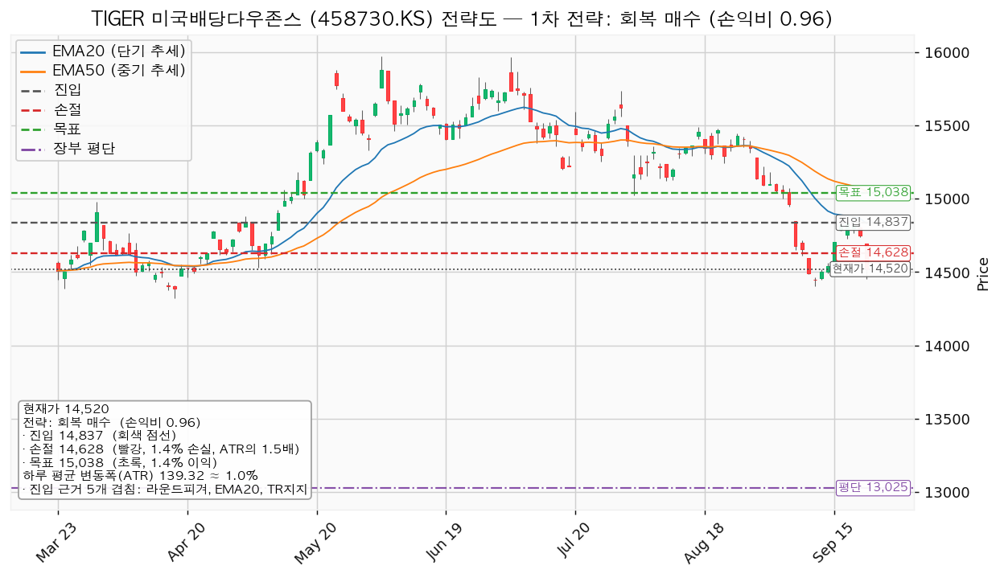
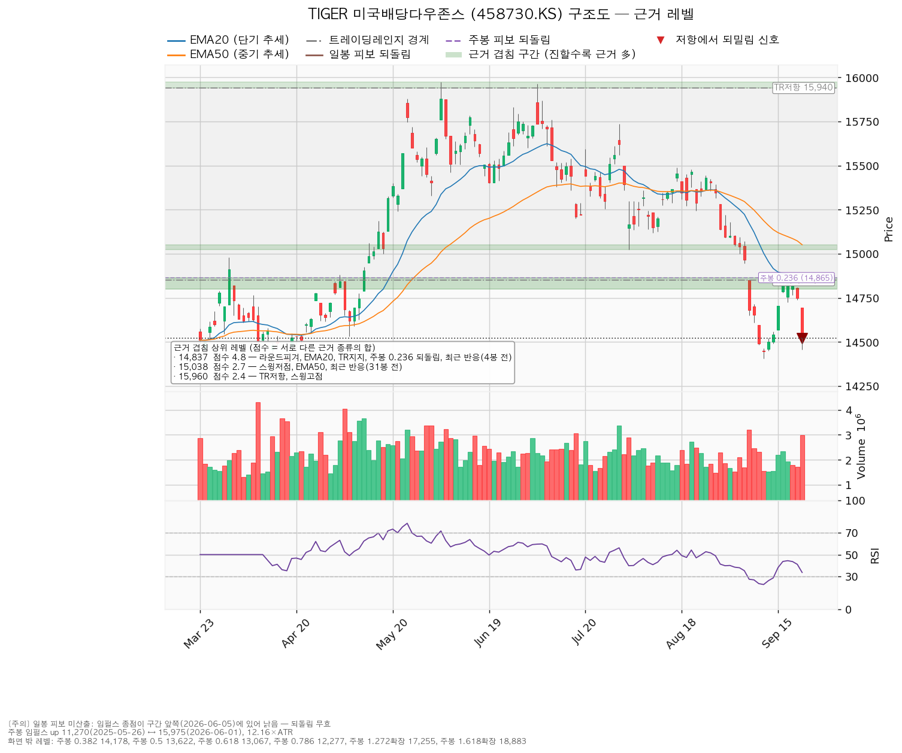
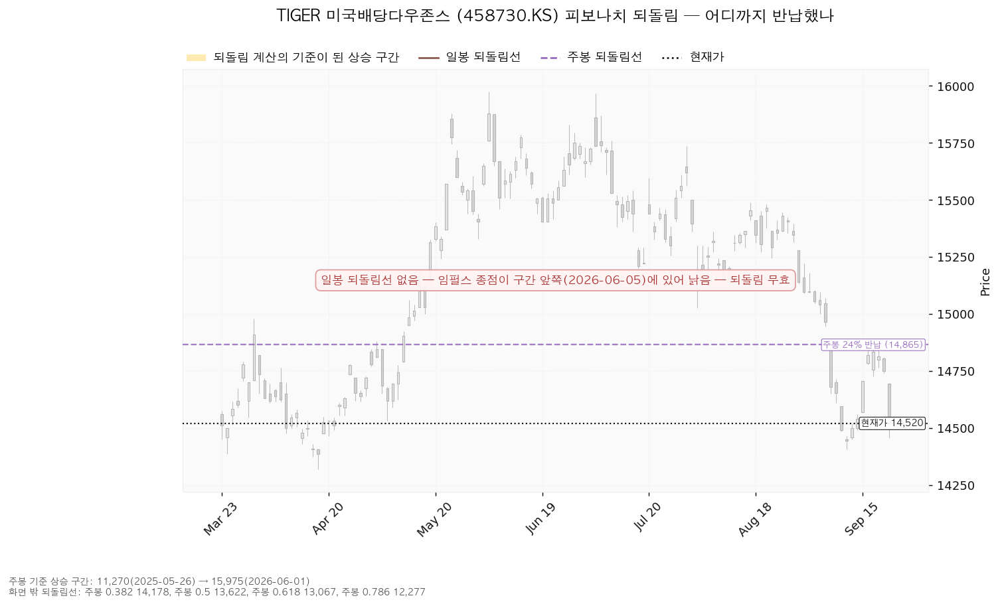
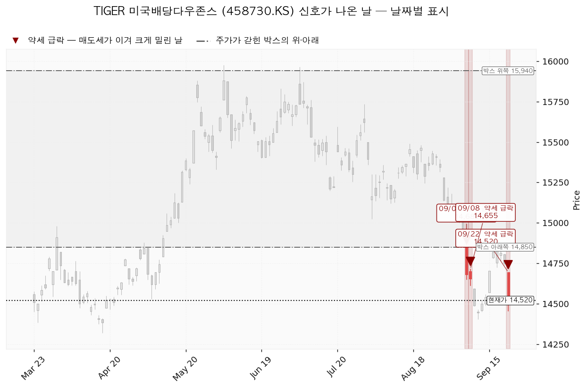

TIGER 미국배당다우존스 (458730.KS)는 미국 고배당주 100종목으로 구성된 Dow Jones U.S. Dividend 100 지수를 따라가는 한국 상장 ETF입니다.
| 구분 | 가격 | 판정 방식 | 현재가 대비 | 뜻 |
|---|---|---|---|---|
| 회복선 | 14,837원 | 일봉 종가 회복 | +2.18% | 진입 조건이지만 매수선은 아닙니다 — 손익비 미달로 넘긴 계획이라 이 가격에 닿으면 재분석합니다 (구조상 단기 회복선으로 표시된 15,038원은 이 셋업의 목표와 같은 가격입니다) |
| 집행 손절 | 14,628원 | 장중 저가 터치 | +0.74% | 14,837원에 진입했을 경우에만 유효 — 미진입 시 의미 없음 |
| 관망 종료 기준 | 14,403원 | 일봉 종가 이탈 | -0.81% | 이 리포트의 매수 계획 종료, 새 리포트 대기 (보유 1,006주는 유지) |
| 확인선 | 15,940원 | 일봉 종가 돌파 | +9.78% | 박스 상단 — 넘으면 새 셋업으로 다시 잡습니다 |
| 폐기선 | 14,850원 | 이탈 후 3거래일 내 회복 실패(또는 그 전 14,711원 아래 종가) + 반등에서 저항 확인 | +2.27% (2.37 ATR) | 이탈 상태 — 회복 여부 확인 필요 |
재지 못한 항목은 없어 9항목 전부가 분모에 들어갑니다.
셋업은 하나만 산출됐고, 그것이 대표입니다.
| 항목 | 값 |
|---|---|
| 이름 | 회복 매수 · 구조 증명도 회복 확인형 · 매력 없음으로 보류 |
| 진입 | 14,837원 일봉 종가 회복 시 (현재가 +2.18%, 2.27 ATR 위) |
| 집행 손절 | 14,628원 (손절 폭 1.5 ATR · -1.41%) |
| 목표 | 15,038원 전량 청산 (분할 없이 단일 목표) |
| 손익비 | `1:0.96` (손절 폭 1.5 ATR) |
| 엣지 | 모멘텀 — 저항을 종가로 되찾으면 그 방향이 이어진다는 전제. 자주 틀리고 소수가 크게 맞는 유형입니다(이 유형의 일반적 성격이며 이 엔진에서 측정한 값이 아닙니다) |
| 진입 근거 5개 겹침 | 라운드피겨 · EMA20 · 박스 하단 지지 · 주봉 0.236 되돌림(14,865원) · 최근 반응(4봉 전) — 겹침 점수 4.8 |
| 손절 근거 | 진입 기준선에서 ATR의 1.5배 아래 |
| 대표로 고른 이유 | 손익비 0.96 × 구조 증명도(회복 확인형) × 근거 겹침 4.8점. 상대강도·거래량으로 순위에 0.9배가 곱해졌습니다(지수 대비 20일 초과수익 -10.09%, 상대강도선 20일 기울기 -9.69%, 돌파 구간 거래량 최대 1.49배) |
중간 목표가 없어 분할 청산과 본전 스탑이 없습니다 — 전 구간 손익비도 0.96으로 같고, 1차 목표 체결 후 본전 스탑을 걸었을 때의 하한 손익비는 산출되지 않습니다. 셋업이 하나뿐이라 상대강도·거래량 배수 0.9는 순위를 바꾸지 않았습니다.
손절 폭 1.5 ATR은 구조적 손절 그 자체이므로 구조적 손절 기준 손익비가 따로 산출되지 않습니다 — 손절을 하루 변동폭 안으로 조여 손익비를 만들어 낸 셋업이 아니며, 구조적 손절에서 잰 손익비가 그대로 0.96입니다. 그래서 결론은 패스입니다.
진입 14,837원에서 목표 15,038원까지는 1.45 ATR로 하루 평균 변동폭의 2배에 못 미칩니다. 트레일링이나 다단 청산을 권하지 않고 단일 청산으로 끝냅니다(2배라는 기준은 관행이지 정설이 아닙니다). 엔진이 단기 회복선으로 표시한 15,038원은 이 셋업의 목표와 같은 가격이며, 확인선 15,940원은 그보다 위의 박스 상단입니다. 15,940원을 일봉 종가로 넘기면 이 포지션의 연장이 아니라 새 셋업으로 다시 잡습니다.
계획 진입가 14,837원은 장부 평단 13,025원보다 위입니다 — 물타기가 아니라 추가 매수에 해당하며, 이번엔 그 추가 매수를 하지 않습니다.

기준선 14,837원에 대한 판정이며, 종가로 그 위에 올라서 진입한 뒤부터 작동합니다.
1. 관찰 — 일봉 종가가 14,837원 아래로 마감. 구조 이탈 시작이며 되돌아 올라오면 속임수 하락일 수 있어 아직 무효가 아닙니다. 신규 진입만 중단하고 집행 손절은 그대로 둡니다. 2. 경고 — 이탈 후 3거래일 안에 14,837원을 종가로 회복하지 못하거나, 그 전에 일봉 종가가 14,697원 아래로 마감(하루 평균 변동폭의 1배만큼 더 밀림). 둘 중 먼저 오는 쪽입니다. 잔여 비중을 줄이고 반등에서 이 가격의 반응을 확인합니다. 3. 무효 — 반등이 14,837원에서 막히고 그 아래로 되밀림(지지가 저항으로 전환). 포지션을 정리하고 새 구조가 만들어질 때까지 관망합니다.
집행 손절 14,628원은 이 판정과 무관하게 별도로 작동하고, 장중 일시 이탈은 어느 단계에도 해당하지 않습니다. 시나리오 폐기선 14,850원 쪽은 이미 2단계 조건(14,711원 아래 종가)이 충족된 상태이며, 남은 것은 반등이 14,850원에서 막혀 저항으로 확인되는지뿐입니다. 폐기선이 현재가에서 2.37 ATR 거리라 하루 변동폭 3배 안에 있고, 실무상 작동하는 기준입니다.
| 가격 | 겹침 점수 | 근거 |
|---|---|---|
| 14,837원 | 4.8 | 라운드피겨 · EMA20 · 박스 하단 지지 · 주봉 0.236 되돌림 · 최근 반응(4봉 전) |
| 15,038원 | 2.7 | 스윙저점 · EMA50 · 최근 반응(31봉 전) |
| 14,403원 | 2.3 | 라운드피겨 · 스윙저점 · 최근 반응(8봉 전) |
| 15,960원 | 2.4 | 박스 상단 저항 · 스윙고점 2개 |
| 14,189원 | 2.1 | 주봉 0.382 되돌림 · 라운드피겨 |
| 12,259원 | 3.7 | 9번 반응한 지지·저항 · 역할 전환(저항→지지) · 주봉 0.786 되돌림 |
박스는 724개 일봉 중 최근 90봉을 본 것입니다. 40봉·180봉 창도 시험했으나 가격이 가장 잘 지킨 창은 90봉이었고(가격이 박스 안에 머문 비율 0.867, 폭 7.82 ATR), 나머지 둘은 유효 박스로 인정되지 않았습니다. 박스는 13,910~14,882원 구간에서 위로 올라와 진입한 자리라 재축적과 분산의 갈림길입니다. 박스 안쪽 판정은 중립입니다 — 지지 테스트는 2026-05-14(14,970원, 20일 평균 거래량의 1.0배) · 2026-05-18(15,000원, 1.0배) · 2026-09-10(14,405원, 0.76배)로 매도 거래량이 줄었지만, 박스 안 저점은 절하됐고 상승봉 대 하락봉 거래량비도 0.94로 1을 밑돕니다. 매집 우위가 아니므로 지지 확인 매수는 산출되지 않았습니다.

일봉 되돌림선은 기준이 될 상승 구간의 종점이 2026-06-05로 낡아 이번엔 계산되지 않았습니다 — 이 리포트의 되돌림선은 주봉뿐입니다. 주봉은 2025-05-26 저점 11,270원에서 2026-06-01 고점 15,975원까지의 상승(12.16 ATR)을 기준으로 0.236=14,865원 · 0.382=14,178원 · 0.5=13,623원 · 0.618=13,067원 · 0.786=12,277원입니다. 현재가 14,520원은 0.236과 0.382 사이에 있어 이 상승분의 4분의 1에서 3분의 1가량을 반납한 위치입니다.

신호는 약세 신호(SOW) 세 개뿐입니다 — 2026-09-07 14,680원 · 2026-09-08 14,655원 · 2026-09-22 14,520원. 거래량이 실린 이탈과 이동평균 하락 기울기를 근거로 엔진이 제시한 국면 후보는 하락 국면이며, 박스 안쪽 판정이 중립이라 이 후보는 확정이 아니라 후보에 머뭅니다. 지지 확인 매수나 눌림 매수가 산출되지 않은 것도 같은 이유입니다.

이 종목은 ETF라서 컨센서스 항목이 전부 비어 있습니다 — 목표주가(평균·최저·최고)·애널리스트 수·추천등급·후행 PER·선행 PER·EPS 추정치·추정치 수정 방향·현금흐름이 모두 조회되지 않았습니다. 따라서 후행 배수와 선행 배수의 비교, 목표주가 분포 안에서 현재가의 위치, 추정치 방향으로 하락의 성격을 가르는 절차, 현금흐름 적자의 성격 구분, 상승 여력을 이익 증가와 배수 확장으로 분해하는 작업을 이번 리포트에서는 수행할 수 없습니다. 추정으로 메우지 않습니다.
대신 상대적 위치만 적습니다. 지수 대비 초과수익은 20일 -10.09% · 60일 +9.22% · 120일 -34.36%이고, 가중 초과수익은 -10.36%입니다(가중치 20일 0.45 · 60일 0.30 · 120일 0.25). 상대강도선은 60일 신고가가 아니며 20일 기울기가 -9.69%입니다. 52주 고점 대비로는 -9.11%로 가격 자체는 고점 근처에 있으나, 지수를 20일 기준으로 이기지 못하고 있습니다. RSI(14)는 33.58입니다.
ETF이므로 실적 발표일이 없고, 분배금 일정은 이 시스템의 자료에 없어 적지 않습니다. 대신 이 ETF의 기초자산인 미국 고배당주의 가격을 움직이는 날짜 있는 이벤트를 적습니다.
| 날짜 | 이벤트 |
|---|---|
| 2026-09-30 | 개인소비지출 물가지수(PCE) · 미국 GDP |
| 2026-10-02 | 미국 고용보고서(비농업 고용·실업률) |
| 2026-10-14 | 미국 소비자물가지수(CPI) |
| 2026-10-28 | 연방공개시장위원회(FOMC) 금리 결정 |
그 이후 분기에 이미 알려진 역풍은 확인할 자료가 없습니다.
보유 1,006주의 평가액은 14,607,120원으로 계좌 139,498,400원의 10.47%입니다. 평단 13,025원 대비 평가손익은 +1,503,970원(+11.48%)입니다. 한 종목 상한 13%(18,134,792원)까지 남은 여력은 3,527,672원(계좌의 2.53%)뿐입니다. 셋업의 손절 폭이 1.41%로 좁아 1% 리스크(1,394,984원)를 역산하면 계좌의 71%가 나오지만, 13% 상한이 걸리고 이미 10.47%를 들고 있어 실제로 실을 수 있는 금액은 3,527,672원입니다.
도구 적합성은 문제가 없습니다 — 하루 평균 변동폭이 주가의 0.96%인데 손절 폭은 그 1.5배인 1.41%로, 무관한 일중 흔들림에 체결될 폭이 아닙니다. 시계는 수 주입니다.
판정은 패스입니다. 손익비 `1:0.96`(손절 폭 1.5 ATR)이 1에 못 미치고, 조건 점검 9항목 중 3개만 통과하며 미달은 20일선 위·이동평균 정배열·200일선 위·지수 대비 20일 초과수익·상대강도선 신고가·손익비입니다. 현재가 14,520원은 200일 이동평균 14,590원 아래이기도 합니다(코스피 지수는 200일선 위라 시장 국면 자체는 신규 진입이 가능한 상태입니다). 보유 1,006주는 유지하고 추가 매수는 하지 않습니다.
ATR(하루 평균 변동폭) · EMA(최근 가격에 가중치를 더 준 이동평균) · RSI(0~100으로 매수·매도 힘의 균형을 재는 지표) · SOW(약세 신호, 공급이 수요를 이긴 날) · 겹침 점수(서로 다른 종류의 근거가 같은 가격대에 몇 개 모였는지)